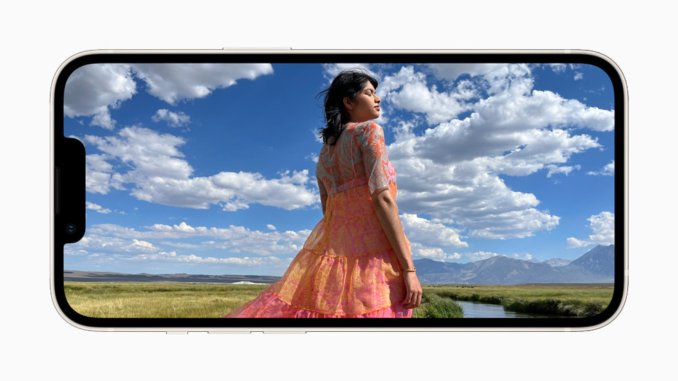
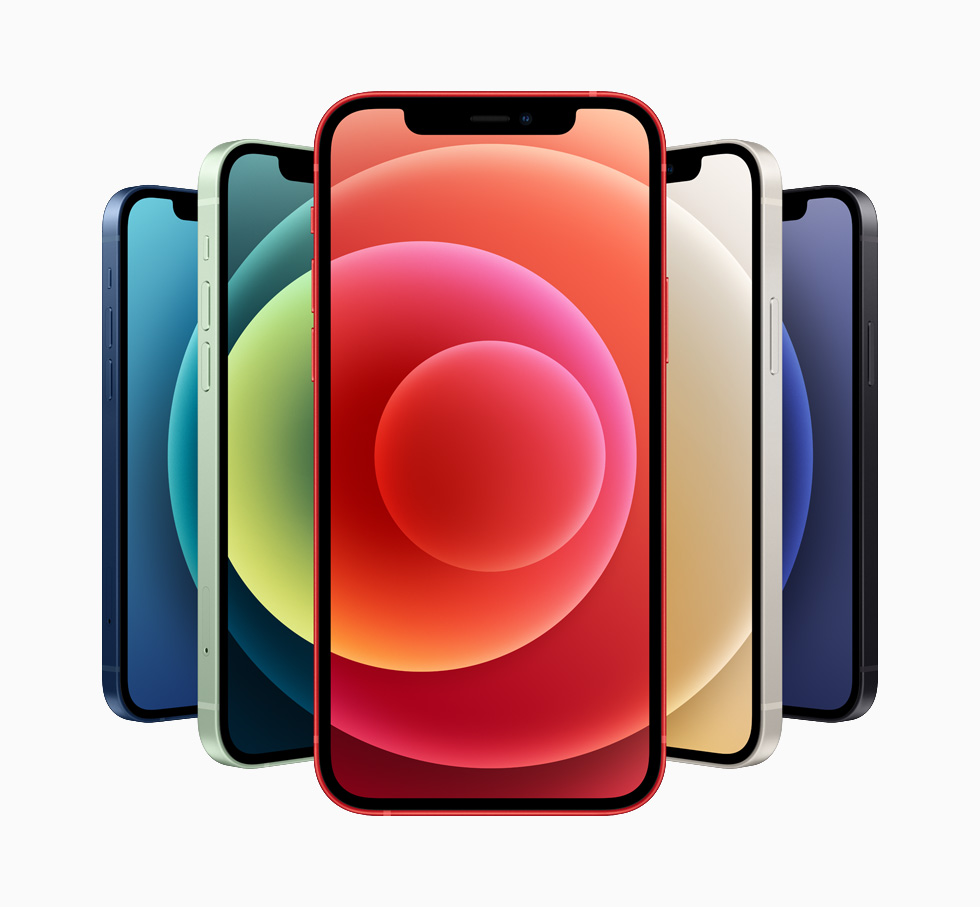

Навигация |
Apple Store |
Информация |
|---|---|---|
ГлавнаяIPhoneMacBookОбзоры на продукты |

IPhone 14 |
Apple представляет iPhone 14 и iPhone 14 mini с инновационными функциями системы камер, невероятно мощным чипом и заметно увеличенным временем работы без подзарядки. Короче еще лучше айфона 13 100 пудов! Есть киносъемка - поиграетесь пару раз и все. |
| 
IPhone 13 |
Apple представляет iPhone 13 и iPhone 13 mini с инновационными функциями системы камер, невероятно мощным чипом и заметно увеличенным временем работы без подзарядки. Короче еще лучше айфона 12 100 пудов! |
|
| 
IPhone 12 |
Apple представляет iPhone 12 и iPhone 12 mini — начало новой эры iPhone с поддержкой 5G. A14 Bionic, передовые камеры и Super Retina XDR с Ceramic Shield Короче еще лучше айфона 11 100 пудов! |